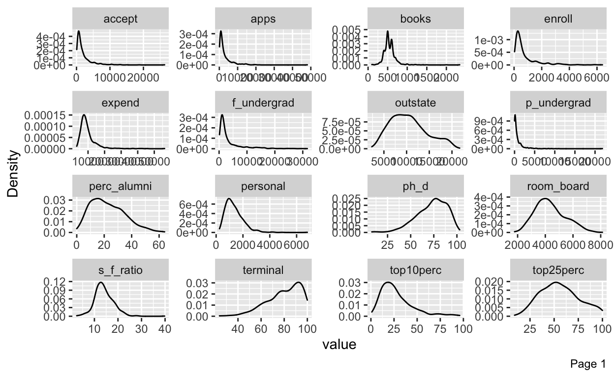
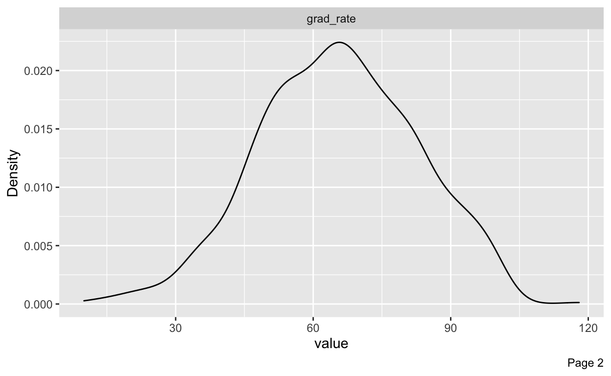
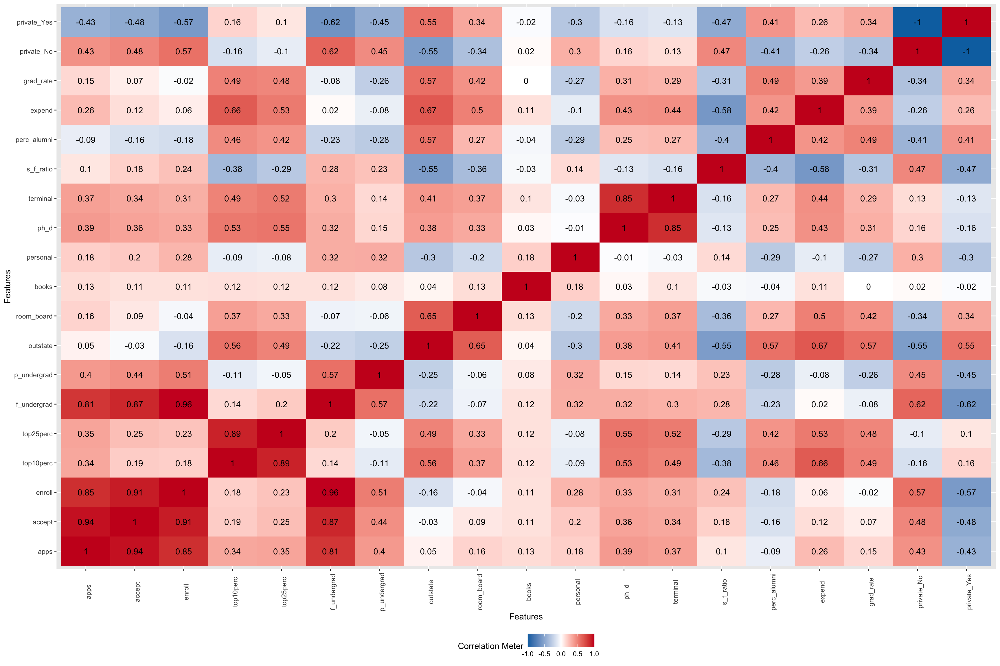
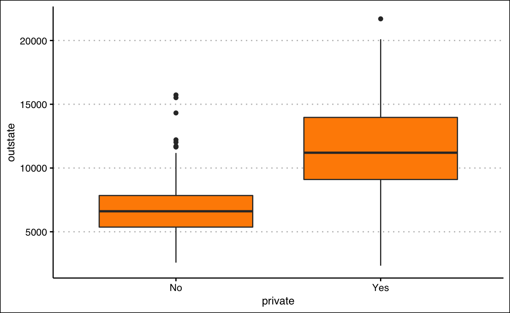
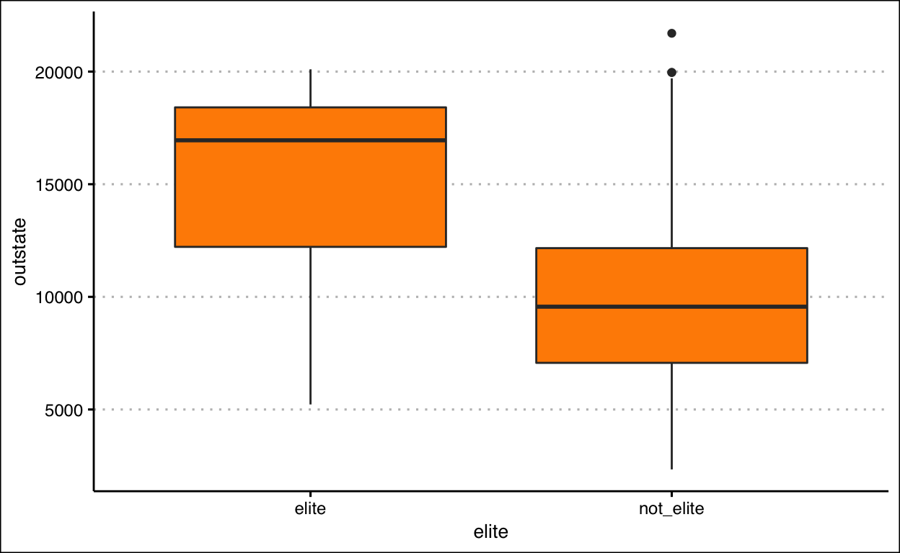
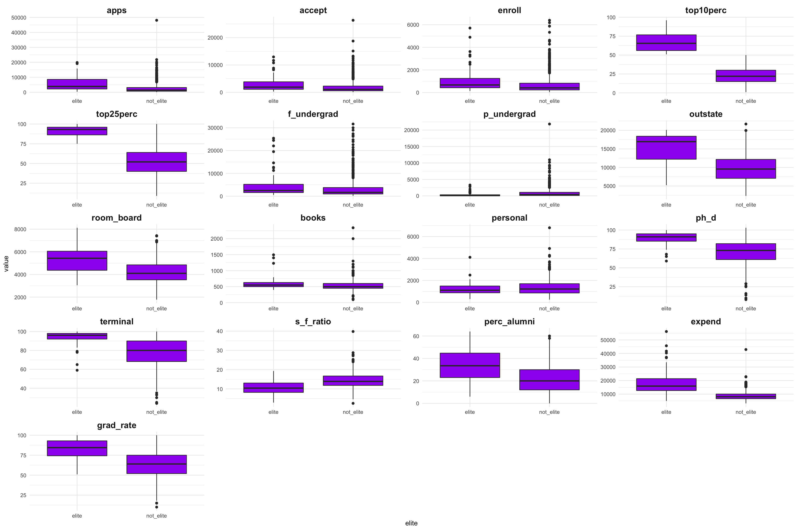
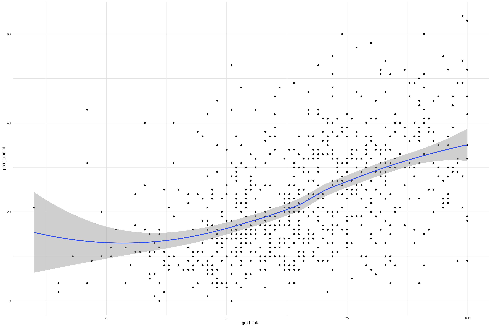

An Introduction to Statistical Learning: With Applications in R, Chapter 2
Using a model to predict Y from X. Prediction (this would be more applicable for machine learning)
Using a model to understand relationship between X and Y (how Y changes as a function of X) Statistical Inference (this would be more applicable for design of experiment analysis).
Bias-Variance trade-off
Variance would mean how the model would vary should there be a change in data points used for training. A linear regression model does not vary very much but a flexible model would vary by quite a lot depending on the training datapoints
Bias would refer to the error that exists in the model in predicting the Y variable. A simple model (rigid) would have higher bias, but a flexible model would have lower bias (although it would function more like a black-box)
Determining whether the problem is classification (predicting categorical Y) or regression (predicting numerical Y)
collect data
import data
tidy data
transform data
exploratory data analysis (EDA): number of rows, columns, determining whether it is numerical/categorical, look for missing values and outliers, determine the distribution of each variable, determine the relationships between variables (correlations), get summary statistics for data
visualize data
split data into train and test sets
preprocess data
fit models
assess different models using test dataset
choose best model based on metrics (eg root mean square error for regression)
tune parameters if needed
Carry out EDA for College dataset
# Import data
library(ISLR2)
library(janitor)
library(skimr)
library(tidyverse)
library(ggthemes)
college <- read_csv("https://github.com/nguyen-toan/ISLR/blob/master/dataset/College.csv")
# raw dataset
college_raw <- College
glimpse(college_raw)
Rows: 777
Columns: 18
$ Private <fct> Yes, Yes, Yes, Yes, Yes, Yes, Yes, Yes, Yes, Yes…
$ Apps <dbl> 1660, 2186, 1428, 417, 193, 587, 353, 1899, 1038…
$ Accept <dbl> 1232, 1924, 1097, 349, 146, 479, 340, 1720, 839,…
$ Enroll <dbl> 721, 512, 336, 137, 55, 158, 103, 489, 227, 172,…
$ Top10perc <dbl> 23, 16, 22, 60, 16, 38, 17, 37, 30, 21, 37, 44, …
$ Top25perc <dbl> 52, 29, 50, 89, 44, 62, 45, 68, 63, 44, 75, 77, …
$ F.Undergrad <dbl> 2885, 2683, 1036, 510, 249, 678, 416, 1594, 973,…
$ P.Undergrad <dbl> 537, 1227, 99, 63, 869, 41, 230, 32, 306, 78, 11…
$ Outstate <dbl> 7440, 12280, 11250, 12960, 7560, 13500, 13290, 1…
$ Room.Board <dbl> 3300, 6450, 3750, 5450, 4120, 3335, 5720, 4826, …
$ Books <dbl> 450, 750, 400, 450, 800, 500, 500, 450, 300, 660…
$ Personal <dbl> 2200, 1500, 1165, 875, 1500, 675, 1500, 850, 500…
$ PhD <dbl> 70, 29, 53, 92, 76, 67, 90, 89, 79, 40, 82, 73, …
$ Terminal <dbl> 78, 30, 66, 97, 72, 73, 93, 100, 84, 41, 88, 91,…
$ S.F.Ratio <dbl> 18.1, 12.2, 12.9, 7.7, 11.9, 9.4, 11.5, 13.7, 11…
$ perc.alumni <dbl> 12, 16, 30, 37, 2, 11, 26, 37, 23, 15, 31, 41, 2…
$ Expend <dbl> 7041, 10527, 8735, 19016, 10922, 9727, 8861, 114…
$ Grad.Rate <dbl> 60, 56, 54, 59, 15, 55, 63, 73, 80, 52, 73, 76, …# working dataset
college_working <- college_raw %>%
rownames_to_column() %>%
rename(college = rowname) %>%
clean_names()
glimpse(college_working)
Rows: 777
Columns: 19
$ college <chr> "Abilene Christian University", "Adelphi Univers…
$ private <fct> Yes, Yes, Yes, Yes, Yes, Yes, Yes, Yes, Yes, Yes…
$ apps <dbl> 1660, 2186, 1428, 417, 193, 587, 353, 1899, 1038…
$ accept <dbl> 1232, 1924, 1097, 349, 146, 479, 340, 1720, 839,…
$ enroll <dbl> 721, 512, 336, 137, 55, 158, 103, 489, 227, 172,…
$ top10perc <dbl> 23, 16, 22, 60, 16, 38, 17, 37, 30, 21, 37, 44, …
$ top25perc <dbl> 52, 29, 50, 89, 44, 62, 45, 68, 63, 44, 75, 77, …
$ f_undergrad <dbl> 2885, 2683, 1036, 510, 249, 678, 416, 1594, 973,…
$ p_undergrad <dbl> 537, 1227, 99, 63, 869, 41, 230, 32, 306, 78, 11…
$ outstate <dbl> 7440, 12280, 11250, 12960, 7560, 13500, 13290, 1…
$ room_board <dbl> 3300, 6450, 3750, 5450, 4120, 3335, 5720, 4826, …
$ books <dbl> 450, 750, 400, 450, 800, 500, 500, 450, 300, 660…
$ personal <dbl> 2200, 1500, 1165, 875, 1500, 675, 1500, 850, 500…
$ ph_d <dbl> 70, 29, 53, 92, 76, 67, 90, 89, 79, 40, 82, 73, …
$ terminal <dbl> 78, 30, 66, 97, 72, 73, 93, 100, 84, 41, 88, 91,…
$ s_f_ratio <dbl> 18.1, 12.2, 12.9, 7.7, 11.9, 9.4, 11.5, 13.7, 11…
$ perc_alumni <dbl> 12, 16, 30, 37, 2, 11, 26, 37, 23, 15, 31, 41, 2…
$ expend <dbl> 7041, 10527, 8735, 19016, 10922, 9727, 8861, 114…
$ grad_rate <dbl> 60, 56, 54, 59, 15, 55, 63, 73, 80, 52, 73, 76, …Notes:
The variables are: - private/public (cat) - apps: number of applications received (num) - accept: number of applicants accepted (num) - enroll: number of new students enrolled (num)
top10perc: new students from top 10% of high school class (num)
top25perc: new students from top 25% of high school class (num)
f_undergrad: number of full time undergraduates (num)
p_undergrad: number of part time undergraduates (num)
outstate: out of state tuition (num)
room_board: room and board costs (num)
books: estimated book costs (num)
personal: estimated personal spending (num)
ph_d: percent of faculty with phd (num)
terminal: percent of faculty with terminal degree (num)
s_f_ratio: student/faculty ratio (num)
perc_alumni: percent of alumni who donate (num)
expend: instructional expenditure per student (num)
grad_rate: graduation rate (num)
college_working %>%
select(-college) %>%
skim()
| Name | Piped data |
| Number of rows | 777 |
| Number of columns | 18 |
| _______________________ | |
| Column type frequency: | |
| factor | 1 |
| numeric | 17 |
| ________________________ | |
| Group variables | None |
Variable type: factor
| skim_variable | n_missing | complete_rate | ordered | n_unique | top_counts |
|---|---|---|---|---|---|
| private | 0 | 1 | FALSE | 2 | Yes: 565, No: 212 |
Variable type: numeric
| skim_variable | n_missing | complete_rate | mean | sd | p0 | p25 | p50 | p75 | p100 | hist |
|---|---|---|---|---|---|---|---|---|---|---|
| apps | 0 | 1 | 3001.64 | 3870.20 | 81.0 | 776.0 | 1558.0 | 3624.0 | 48094.0 | ▇▁▁▁▁ |
| accept | 0 | 1 | 2018.80 | 2451.11 | 72.0 | 604.0 | 1110.0 | 2424.0 | 26330.0 | ▇▁▁▁▁ |
| enroll | 0 | 1 | 779.97 | 929.18 | 35.0 | 242.0 | 434.0 | 902.0 | 6392.0 | ▇▁▁▁▁ |
| top10perc | 0 | 1 | 27.56 | 17.64 | 1.0 | 15.0 | 23.0 | 35.0 | 96.0 | ▇▇▂▁▁ |
| top25perc | 0 | 1 | 55.80 | 19.80 | 9.0 | 41.0 | 54.0 | 69.0 | 100.0 | ▂▆▇▅▃ |
| f_undergrad | 0 | 1 | 3699.91 | 4850.42 | 139.0 | 992.0 | 1707.0 | 4005.0 | 31643.0 | ▇▁▁▁▁ |
| p_undergrad | 0 | 1 | 855.30 | 1522.43 | 1.0 | 95.0 | 353.0 | 967.0 | 21836.0 | ▇▁▁▁▁ |
| outstate | 0 | 1 | 10440.67 | 4023.02 | 2340.0 | 7320.0 | 9990.0 | 12925.0 | 21700.0 | ▃▇▆▂▂ |
| room_board | 0 | 1 | 4357.53 | 1096.70 | 1780.0 | 3597.0 | 4200.0 | 5050.0 | 8124.0 | ▂▇▆▂▁ |
| books | 0 | 1 | 549.38 | 165.11 | 96.0 | 470.0 | 500.0 | 600.0 | 2340.0 | ▇▆▁▁▁ |
| personal | 0 | 1 | 1340.64 | 677.07 | 250.0 | 850.0 | 1200.0 | 1700.0 | 6800.0 | ▇▃▁▁▁ |
| ph_d | 0 | 1 | 72.66 | 16.33 | 8.0 | 62.0 | 75.0 | 85.0 | 103.0 | ▁▁▅▇▅ |
| terminal | 0 | 1 | 79.70 | 14.72 | 24.0 | 71.0 | 82.0 | 92.0 | 100.0 | ▁▁▃▆▇ |
| s_f_ratio | 0 | 1 | 14.09 | 3.96 | 2.5 | 11.5 | 13.6 | 16.5 | 39.8 | ▁▇▂▁▁ |
| perc_alumni | 0 | 1 | 22.74 | 12.39 | 0.0 | 13.0 | 21.0 | 31.0 | 64.0 | ▅▇▆▂▁ |
| expend | 0 | 1 | 9660.17 | 5221.77 | 3186.0 | 6751.0 | 8377.0 | 10830.0 | 56233.0 | ▇▁▁▁▁ |
| grad_rate | 0 | 1 | 65.46 | 17.18 | 10.0 | 53.0 | 65.0 | 78.0 | 118.0 | ▁▅▇▅▁ |
library(DataExplorer)
library(GGally)
# understanding the dataset
introduce(college_working) %>%
tibble() %>%
pivot_longer(cols = everything())
# A tibble: 9 × 2
name value
<chr> <dbl>
1 rows 777
2 columns 19
3 discrete_columns 2
4 continuous_columns 17
5 all_missing_columns 0
6 total_missing_values 0
7 complete_rows 777
8 total_observations 14763
9 memory_usage 181896# plot basic description for dataset
plot_intro(college_working)
# plot missing value distribution
plot_missing(college_working) # no missing data
# plot distribution (discrete)
plot_bar(college_working)
# plot distribution (numerical)
plot_density(college_working)

# correlation heatmap
plot_correlation(college_working)

college_working %>%
select(private) %>%
table()
.
No Yes
212 565 # percentage for public, private colleges
table(college_working$private)/777 * 100
No Yes
27.28443 72.71557 glimpse(college_working)
Rows: 777
Columns: 19
$ college <chr> "Abilene Christian University", "Adelphi Univers…
$ private <fct> Yes, Yes, Yes, Yes, Yes, Yes, Yes, Yes, Yes, Yes…
$ apps <dbl> 1660, 2186, 1428, 417, 193, 587, 353, 1899, 1038…
$ accept <dbl> 1232, 1924, 1097, 349, 146, 479, 340, 1720, 839,…
$ enroll <dbl> 721, 512, 336, 137, 55, 158, 103, 489, 227, 172,…
$ top10perc <dbl> 23, 16, 22, 60, 16, 38, 17, 37, 30, 21, 37, 44, …
$ top25perc <dbl> 52, 29, 50, 89, 44, 62, 45, 68, 63, 44, 75, 77, …
$ f_undergrad <dbl> 2885, 2683, 1036, 510, 249, 678, 416, 1594, 973,…
$ p_undergrad <dbl> 537, 1227, 99, 63, 869, 41, 230, 32, 306, 78, 11…
$ outstate <dbl> 7440, 12280, 11250, 12960, 7560, 13500, 13290, 1…
$ room_board <dbl> 3300, 6450, 3750, 5450, 4120, 3335, 5720, 4826, …
$ books <dbl> 450, 750, 400, 450, 800, 500, 500, 450, 300, 660…
$ personal <dbl> 2200, 1500, 1165, 875, 1500, 675, 1500, 850, 500…
$ ph_d <dbl> 70, 29, 53, 92, 76, 67, 90, 89, 79, 40, 82, 73, …
$ terminal <dbl> 78, 30, 66, 97, 72, 73, 93, 100, 84, 41, 88, 91,…
$ s_f_ratio <dbl> 18.1, 12.2, 12.9, 7.7, 11.9, 9.4, 11.5, 13.7, 11…
$ perc_alumni <dbl> 12, 16, 30, 37, 2, 11, 26, 37, 23, 15, 31, 41, 2…
$ expend <dbl> 7041, 10527, 8735, 19016, 10922, 9727, 8861, 114…
$ grad_rate <dbl> 60, 56, 54, 59, 15, 55, 63, 73, 80, 52, 73, 76, …# min, max for numeric columns
college_working %>%
pivot_longer(cols = 3:19) %>%
group_by(name) %>%
summarise(min = min(value),
max = max(value))
# A tibble: 17 × 3
name min max
<chr> <dbl> <dbl>
1 accept 72 26330
2 apps 81 48094
3 books 96 2340
4 enroll 35 6392
5 expend 3186 56233
6 f_undergrad 139 31643
7 grad_rate 10 118
8 outstate 2340 21700
9 p_undergrad 1 21836
10 perc_alumni 0 64
11 personal 250 6800
12 ph_d 8 103
13 room_board 1780 8124
14 s_f_ratio 2.5 39.8
15 terminal 24 100
16 top10perc 1 96
17 top25perc 9 100 college_working %>%
filter(grad_rate>100) # outlier
college private apps accept enroll top10perc top25perc
1 Cazenovia College Yes 3847 3433 527 9 35
f_undergrad p_undergrad outstate room_board books personal ph_d
1 1010 12 9384 4840 600 500 22
terminal s_f_ratio perc_alumni expend grad_rate
1 47 14.3 20 7697 118college_working %>%
ggplot(aes(private, outstate)) +
geom_boxplot(fill = "darkorange") +
theme_clean()

Create a new qualitative variable, Elite, by binning the Top10perc variable
glimpse(college_working)
Rows: 777
Columns: 19
$ college <chr> "Abilene Christian University", "Adelphi Univers…
$ private <fct> Yes, Yes, Yes, Yes, Yes, Yes, Yes, Yes, Yes, Yes…
$ apps <dbl> 1660, 2186, 1428, 417, 193, 587, 353, 1899, 1038…
$ accept <dbl> 1232, 1924, 1097, 349, 146, 479, 340, 1720, 839,…
$ enroll <dbl> 721, 512, 336, 137, 55, 158, 103, 489, 227, 172,…
$ top10perc <dbl> 23, 16, 22, 60, 16, 38, 17, 37, 30, 21, 37, 44, …
$ top25perc <dbl> 52, 29, 50, 89, 44, 62, 45, 68, 63, 44, 75, 77, …
$ f_undergrad <dbl> 2885, 2683, 1036, 510, 249, 678, 416, 1594, 973,…
$ p_undergrad <dbl> 537, 1227, 99, 63, 869, 41, 230, 32, 306, 78, 11…
$ outstate <dbl> 7440, 12280, 11250, 12960, 7560, 13500, 13290, 1…
$ room_board <dbl> 3300, 6450, 3750, 5450, 4120, 3335, 5720, 4826, …
$ books <dbl> 450, 750, 400, 450, 800, 500, 500, 450, 300, 660…
$ personal <dbl> 2200, 1500, 1165, 875, 1500, 675, 1500, 850, 500…
$ ph_d <dbl> 70, 29, 53, 92, 76, 67, 90, 89, 79, 40, 82, 73, …
$ terminal <dbl> 78, 30, 66, 97, 72, 73, 93, 100, 84, 41, 88, 91,…
$ s_f_ratio <dbl> 18.1, 12.2, 12.9, 7.7, 11.9, 9.4, 11.5, 13.7, 11…
$ perc_alumni <dbl> 12, 16, 30, 37, 2, 11, 26, 37, 23, 15, 31, 41, 2…
$ expend <dbl> 7041, 10527, 8735, 19016, 10922, 9727, 8861, 114…
$ grad_rate <dbl> 60, 56, 54, 59, 15, 55, 63, 73, 80, 52, 73, 76, …college_working %>%
ggplot(aes(top10perc)) +
geom_histogram(fill = "darkorange", col = "black") +
theme_few()
# using case_when
college_working_b <- college_working %>%
mutate(elite = as.factor(case_when(top10perc > 50 ~ "elite",
TRUE ~ "not_elite"))) %>%
filter(grad_rate <=100)
glimpse(college_working_b)
Rows: 776
Columns: 20
$ college <chr> "Abilene Christian University", "Adelphi Univers…
$ private <fct> Yes, Yes, Yes, Yes, Yes, Yes, Yes, Yes, Yes, Yes…
$ apps <dbl> 1660, 2186, 1428, 417, 193, 587, 353, 1899, 1038…
$ accept <dbl> 1232, 1924, 1097, 349, 146, 479, 340, 1720, 839,…
$ enroll <dbl> 721, 512, 336, 137, 55, 158, 103, 489, 227, 172,…
$ top10perc <dbl> 23, 16, 22, 60, 16, 38, 17, 37, 30, 21, 37, 44, …
$ top25perc <dbl> 52, 29, 50, 89, 44, 62, 45, 68, 63, 44, 75, 77, …
$ f_undergrad <dbl> 2885, 2683, 1036, 510, 249, 678, 416, 1594, 973,…
$ p_undergrad <dbl> 537, 1227, 99, 63, 869, 41, 230, 32, 306, 78, 11…
$ outstate <dbl> 7440, 12280, 11250, 12960, 7560, 13500, 13290, 1…
$ room_board <dbl> 3300, 6450, 3750, 5450, 4120, 3335, 5720, 4826, …
$ books <dbl> 450, 750, 400, 450, 800, 500, 500, 450, 300, 660…
$ personal <dbl> 2200, 1500, 1165, 875, 1500, 675, 1500, 850, 500…
$ ph_d <dbl> 70, 29, 53, 92, 76, 67, 90, 89, 79, 40, 82, 73, …
$ terminal <dbl> 78, 30, 66, 97, 72, 73, 93, 100, 84, 41, 88, 91,…
$ s_f_ratio <dbl> 18.1, 12.2, 12.9, 7.7, 11.9, 9.4, 11.5, 13.7, 11…
$ perc_alumni <dbl> 12, 16, 30, 37, 2, 11, 26, 37, 23, 15, 31, 41, 2…
$ expend <dbl> 7041, 10527, 8735, 19016, 10922, 9727, 8861, 114…
$ grad_rate <dbl> 60, 56, 54, 59, 15, 55, 63, 73, 80, 52, 73, 76, …
$ elite <fct> not_elite, not_elite, not_elite, elite, not_elit…# to check number of elite vs non_elite
summary(college_working_b$elite)
elite not_elite
78 698 # boxplot
college_working_b %>%
ggplot(aes(elite, outstate)) +
geom_boxplot(fill = "darkorange") +
theme_clean()

# differences between elite, number of applications
college_working_b %>%
ggplot(aes(elite, apps)) +
geom_boxplot(fill = "darkorange") +
theme_clean()
# which is the outlier? - Rutgers at New Brunswick
college_working_b %>%
select(college, apps, elite) %>%
filter(apps > 40000)
college apps elite
1 Rutgers at New Brunswick 48094 not_elite# Looking at boxplots (numerical) vs private/not private
college_working_b %>%
dplyr::select(-college) %>%
reshape::melt() %>%
ggplot(., aes(x = private, value)) +
geom_boxplot(fill = "deepskyblue4") +
facet_wrap(~variable, ncol = 4, scales = "free") +
theme_minimal() +
theme(strip.text = element_text(size = 14, face = "bold"))
# looking at boxplots (numerical) vs elite/not elite
college_working_b %>%
dplyr::select(-college) %>%
reshape::melt() %>%
ggplot(., aes(x = elite, value)) +
geom_boxplot(fill = "purple") +
facet_wrap(~variable, ncol = 4, scales = "free") +
theme_minimal() +
theme(strip.text = element_text(size = 14, face = "bold"))

college_working_b %>%
ggstatsplot::ggcorrmat() # what correlates with graduation rate?
#
college_working_b %>%
ggplot(aes(grad_rate, top10perc)) +
geom_point() +
geom_smooth() +
theme_minimal()
college_working_b %>%
ggplot(aes(grad_rate, outstate)) +
geom_point() +
geom_smooth() +
theme_minimal()
college_working_b %>%
ggplot(aes(grad_rate, s_f_ratio)) +
geom_point() +
geom_smooth() +
theme_minimal()
college_working_b %>%
ggplot(aes(grad_rate, perc_alumni)) +
geom_point() +
geom_smooth() +
theme_minimal()

data(Auto)
glimpse(Auto)
Rows: 392
Columns: 9
$ mpg <dbl> 18, 15, 18, 16, 17, 15, 14, 14, 14, 15, 15, 14,…
$ cylinders <dbl> 8, 8, 8, 8, 8, 8, 8, 8, 8, 8, 8, 8, 8, 8, 4, 6,…
$ displacement <dbl> 307, 350, 318, 304, 302, 429, 454, 440, 455, 39…
$ horsepower <dbl> 130, 165, 150, 150, 140, 198, 220, 215, 225, 19…
$ weight <dbl> 3504, 3693, 3436, 3433, 3449, 4341, 4354, 4312,…
$ acceleration <dbl> 12.0, 11.5, 11.0, 12.0, 10.5, 10.0, 9.0, 8.5, 1…
$ year <dbl> 70, 70, 70, 70, 70, 70, 70, 70, 70, 70, 70, 70,…
$ origin <dbl> 1, 1, 1, 1, 1, 1, 1, 1, 1, 1, 1, 1, 1, 1, 3, 1,…
$ name <fct> chevrolet chevelle malibu, buick skylark 320, p…auto_working <- Auto %>%
mutate(cylinders = factor(cylinders),
origin = factor(origin),
year_fct = factor(year)
)
glimpse(auto_working)
Rows: 392
Columns: 10
$ mpg <dbl> 18, 15, 18, 16, 17, 15, 14, 14, 14, 15, 15, 14,…
$ cylinders <fct> 8, 8, 8, 8, 8, 8, 8, 8, 8, 8, 8, 8, 8, 8, 4, 6,…
$ displacement <dbl> 307, 350, 318, 304, 302, 429, 454, 440, 455, 39…
$ horsepower <dbl> 130, 165, 150, 150, 140, 198, 220, 215, 225, 19…
$ weight <dbl> 3504, 3693, 3436, 3433, 3449, 4341, 4354, 4312,…
$ acceleration <dbl> 12.0, 11.5, 11.0, 12.0, 10.5, 10.0, 9.0, 8.5, 1…
$ year <dbl> 70, 70, 70, 70, 70, 70, 70, 70, 70, 70, 70, 70,…
$ origin <fct> 1, 1, 1, 1, 1, 1, 1, 1, 1, 1, 1, 1, 1, 1, 3, 1,…
$ name <fct> chevrolet chevelle malibu, buick skylark 320, p…
$ year_fct <fct> 70, 70, 70, 70, 70, 70, 70, 70, 70, 70, 70, 70,…# range for quantitative
auto_working %>%
dplyr::select(displacement:year) %>%
pivot_longer(everything()) %>%
group_by(name) %>%
summarise(min = min(value),
max = max(value),
range = max - min,
mean = mean(value),
sd = sd(value))
# A tibble: 5 × 6
name min max range mean sd
<chr> <dbl> <dbl> <dbl> <dbl> <dbl>
1 acceleration 8 24.8 16.8 15.5 2.76
2 displacement 68 455 387 194. 105.
3 horsepower 46 230 184 104. 38.5
4 weight 1613 5140 3527 2978. 849.
5 year 70 82 12 76.0 3.68# remove 10th to 85th observation
auto_working %>%
slice(-(10:85)) %>%
dplyr::select(displacement:year) %>%
pivot_longer(everything()) %>%
group_by(name) %>%
summarise(min = min(value),
max = max(value),
range = max - min,
mean = mean(value),
sd = sd(value))
# A tibble: 5 × 6
name min max range mean sd
<chr> <dbl> <dbl> <dbl> <dbl> <dbl>
1 acceleration 8.5 24.8 16.3 15.7 2.69
2 displacement 68 455 387 187. 99.7
3 horsepower 46 230 184 101. 35.7
4 weight 1649 4997 3348 2936. 811.
5 year 70 82 12 77.1 3.11summary(auto_working)
mpg cylinders displacement horsepower
Min. : 9.00 3: 4 Min. : 68.0 Min. : 46.0
1st Qu.:17.00 4:199 1st Qu.:105.0 1st Qu.: 75.0
Median :22.75 5: 3 Median :151.0 Median : 93.5
Mean :23.45 6: 83 Mean :194.4 Mean :104.5
3rd Qu.:29.00 8:103 3rd Qu.:275.8 3rd Qu.:126.0
Max. :46.60 Max. :455.0 Max. :230.0
weight acceleration year origin
Min. :1613 Min. : 8.00 Min. :70.00 1:245
1st Qu.:2225 1st Qu.:13.78 1st Qu.:73.00 2: 68
Median :2804 Median :15.50 Median :76.00 3: 79
Mean :2978 Mean :15.54 Mean :75.98
3rd Qu.:3615 3rd Qu.:17.02 3rd Qu.:79.00
Max. :5140 Max. :24.80 Max. :82.00
name year_fct
amc matador : 5 73 : 40
ford pinto : 5 78 : 36
toyota corolla : 5 76 : 34
amc gremlin : 4 75 : 30
amc hornet : 4 82 : 30
chevrolet chevette: 4 70 : 29
(Other) :365 (Other):193 table(auto_working$mpg) %>%
as.data.frame() %>%
group_by(Var1) %>%
count()
# A tibble: 127 × 2
# Groups: Var1 [127]
Var1 n
<fct> <int>
1 9 1
2 10 1
3 11 1
4 12 1
5 13 1
6 14 1
7 14.5 1
8 15 1
9 15.5 1
10 16 1
# … with 117 more rowsauto_working %>%
select(-name) %>%
ggpairs() +
theme_classic()
# to predict mog, potentially useful variables would be displacement, horsepower, weight, acceleration, and maybe year.
library(MASS)
data("Boston") # Housing Values in Suburbs of Boston
glimpse(Boston) # 506 rows, 14 columns
Rows: 506
Columns: 14
$ crim <dbl> 0.00632, 0.02731, 0.02729, 0.03237, 0.06905, 0.02985…
$ zn <dbl> 18.0, 0.0, 0.0, 0.0, 0.0, 0.0, 12.5, 12.5, 12.5, 12.…
$ indus <dbl> 2.31, 7.07, 7.07, 2.18, 2.18, 2.18, 7.87, 7.87, 7.87…
$ chas <int> 0, 0, 0, 0, 0, 0, 0, 0, 0, 0, 0, 0, 0, 0, 0, 0, 0, 0…
$ nox <dbl> 0.538, 0.469, 0.469, 0.458, 0.458, 0.458, 0.524, 0.5…
$ rm <dbl> 6.575, 6.421, 7.185, 6.998, 7.147, 6.430, 6.012, 6.1…
$ age <dbl> 65.2, 78.9, 61.1, 45.8, 54.2, 58.7, 66.6, 96.1, 100.…
$ dis <dbl> 4.0900, 4.9671, 4.9671, 6.0622, 6.0622, 6.0622, 5.56…
$ rad <int> 1, 2, 2, 3, 3, 3, 5, 5, 5, 5, 5, 5, 5, 4, 4, 4, 4, 4…
$ tax <dbl> 296, 242, 242, 222, 222, 222, 311, 311, 311, 311, 31…
$ ptratio <dbl> 15.3, 17.8, 17.8, 18.7, 18.7, 18.7, 15.2, 15.2, 15.2…
$ black <dbl> 396.90, 396.90, 392.83, 394.63, 396.90, 394.12, 395.…
$ lstat <dbl> 4.98, 9.14, 4.03, 2.94, 5.33, 5.21, 12.43, 19.15, 29…
$ medv <dbl> 24.0, 21.6, 34.7, 33.4, 36.2, 28.7, 22.9, 27.1, 16.5…summary(Boston) # median pt ratio = 19.05
crim zn indus
Min. : 0.00632 Min. : 0.00 Min. : 0.46
1st Qu.: 0.08205 1st Qu.: 0.00 1st Qu.: 5.19
Median : 0.25651 Median : 0.00 Median : 9.69
Mean : 3.61352 Mean : 11.36 Mean :11.14
3rd Qu.: 3.67708 3rd Qu.: 12.50 3rd Qu.:18.10
Max. :88.97620 Max. :100.00 Max. :27.74
chas nox rm age
Min. :0.00000 Min. :0.3850 Min. :3.561 Min. : 2.90
1st Qu.:0.00000 1st Qu.:0.4490 1st Qu.:5.886 1st Qu.: 45.02
Median :0.00000 Median :0.5380 Median :6.208 Median : 77.50
Mean :0.06917 Mean :0.5547 Mean :6.285 Mean : 68.57
3rd Qu.:0.00000 3rd Qu.:0.6240 3rd Qu.:6.623 3rd Qu.: 94.08
Max. :1.00000 Max. :0.8710 Max. :8.780 Max. :100.00
dis rad tax ptratio
Min. : 1.130 Min. : 1.000 Min. :187.0 Min. :12.60
1st Qu.: 2.100 1st Qu.: 4.000 1st Qu.:279.0 1st Qu.:17.40
Median : 3.207 Median : 5.000 Median :330.0 Median :19.05
Mean : 3.795 Mean : 9.549 Mean :408.2 Mean :18.46
3rd Qu.: 5.188 3rd Qu.:24.000 3rd Qu.:666.0 3rd Qu.:20.20
Max. :12.127 Max. :24.000 Max. :711.0 Max. :22.00
black lstat medv
Min. : 0.32 Min. : 1.73 Min. : 5.00
1st Qu.:375.38 1st Qu.: 6.95 1st Qu.:17.02
Median :391.44 Median :11.36 Median :21.20
Mean :356.67 Mean :12.65 Mean :22.53
3rd Qu.:396.23 3rd Qu.:16.95 3rd Qu.:25.00
Max. :396.90 Max. :37.97 Max. :50.00 Dataset:
crim - per capita crime rate by town zn - proportion of residential land zoned for lots over 25,000 sq ft indus - proportion of non-retail business acres per town chas - charles river dummy variable ( = 1 if tract bounds river; 0 if otherwise) nox - nitrogen oxides concentration (parts per 10 million) rm - average number of rooms per dwelling age - proportion of owner-occupied units built prior to 1940 dis - weighted mean of distances to five Boston employment centres rad - index of accessibility to radial highways tax - full value property tax per $10,000 ptratio - pupil-teacher ratio by town black - proportion of blacks by town lstat - lower status of population (%) medv - median value of owner occupied homes in $1000s
boston_working %>%
ggpairs() +
theme_classic()
# pos corr: indus, nox, rad, tax, lstat
# neg corr: medv
summary(boston_working$charles)
0 1
471 35 summary(boston_working$medv)
Min. 1st Qu. Median Mean 3rd Qu. Max.
5.00 17.02 21.20 22.53 25.00 50.00 boston_working %>%
arrange(medv) %>%
slice(n = 1)
crim zn indus nox rm age dis rad tax ptratio black lstat
1 38.3518 0 18.1 0.693 5.453 100 1.4896 24 666 20.2 396.9 30.59
medv charles
1 5 0# high crime rate, high proportion of industrialization, very old district, not near employment centres, not near radial highways, high pt ratio, high black proportion, high lstat.
summary(boston_working$rm)
Min. 1st Qu. Median Mean 3rd Qu. Max.
3.561 5.886 6.208 6.285 6.623 8.780 boston_working %>%
filter(rm>7) %>%
count()
n
1 64boston_working %>%
filter(rm > 8) %>%
count()
n
1 13boston_working %>%
filter(rm > 8) %>%
dplyr::select(-charles) %>%
rowid_to_column() %>%
pivot_longer(cols = crim:medv) %>%
group_by(name) %>%
summarise(mean = mean(value),
median = median(value),
min = min(value),
max = max(value))
# A tibble: 13 × 5
name mean median min max
<chr> <dbl> <dbl> <dbl> <dbl>
1 age 71.5 78.3 8.4 93.9
2 black 385. 387. 355. 397.
3 crim 0.719 0.520 0.0201 3.47
4 dis 3.43 2.89 1.80 8.91
5 indus 7.08 6.2 2.68 19.6
6 lstat 4.31 4.14 2.47 7.44
7 medv 44.2 48.3 21.9 50
8 nox 0.539 0.507 0.416 0.718
9 ptratio 16.4 17.4 13 20.2
10 rad 7.46 7 2 24
11 rm 8.35 8.30 8.03 8.78
12 tax 325. 307 224 666
13 zn 13.6 0 0 95 # high age, low black, low crime, near employment centers, low % of lower status of population, high median value, low pt ratio, big houses
https://github.com/onmee/ISLR-Answers/blob/master/2.%20Statistical%20Learning%20Exercises.Rmd
For attribution, please cite this work as
lruolin (2021, Aug. 17). pRactice corner: ISLR02 - Statistical Learning/ Exploratory Data Analysis. Retrieved from https://lruolin.github.io/myBlog/posts/20210817 ISLR2 - Chap 2 Statistical Learning/
BibTeX citation
@misc{lruolin2021islr02,
author = {lruolin, },
title = {pRactice corner: ISLR02 - Statistical Learning/ Exploratory Data Analysis},
url = {https://lruolin.github.io/myBlog/posts/20210817 ISLR2 - Chap 2 Statistical Learning/},
year = {2021}
}